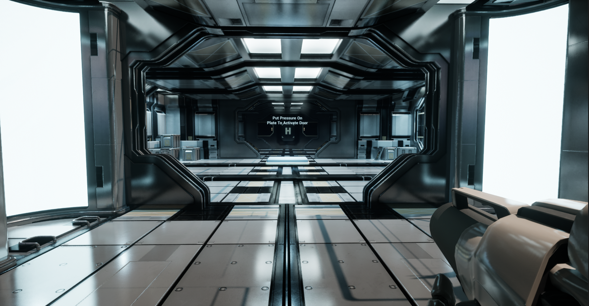
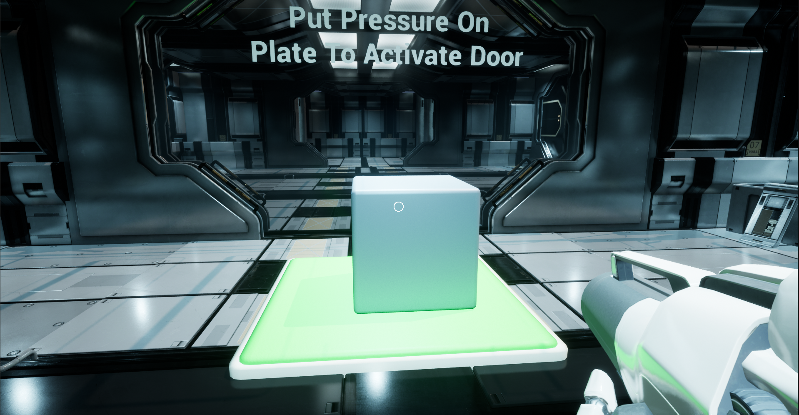
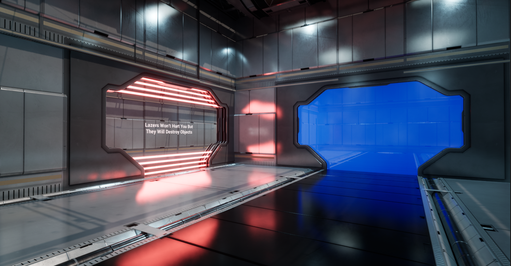
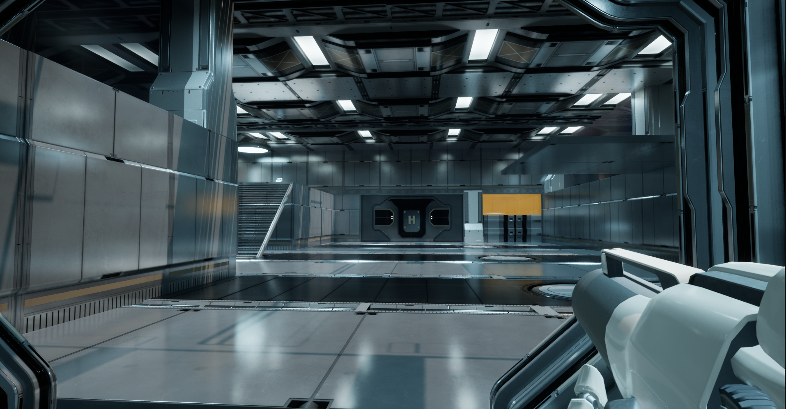
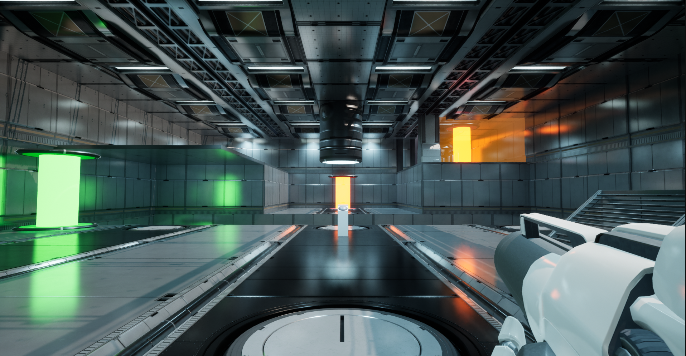

Station Escape is a Sci-fi, first-person, 3D puzzle room game developed using Unreal Engine 5. The goal was to design an immersive and interactive escape room experience that challenges players' problem-solving skills through a series of well-crafted puzzles. With a focus on satisfying core mechanics, Station Escape combines logical gameplay elements, environmental exploration, and engaging puzzle-solving techniques to create a compelling player experience. The development journey involved applying classroom knowledge, and overcoming various challenges to bring the game to life.
The development of Station Escape followed an agile project management approach, with weekly sprints and milestones. We began by importing a sci-fi environment pack to streamline level design and quickly began prototyping the game's core mechanics. Initial features included a block dropper, pressure plates, interactive buttons, teleporters, and moving platforms. A key aspect of the design process was creating intuitive and immersive puzzle mechanics that linked seamlessly within each level.
One of the main challenges in developing Station Escape was handling complex animations and interactions, particularly with the moving platforms and teleporters. For example, ensuring the platform movement would reverse correctly when a player stepped off the pressure plate required intricate logic handling multiple animations. Additionally, syncing buttons with various interactive elements like doors and teleporters was another challenge that was resolved by assigning unique values to objects, simplifying the interaction system for small-scale levels.
Throughout the development of Station Escape, a significant learning outcome was understanding the complexities of Unreal Engine’s blueprint system and how to effectively implement interactive mechanics. From troubleshooting bugs to balancing game mechanics, every step of the process provided valuable insights into game development. One memorable challenge was coding an elevator system, which, while time-consuming, added to the overall sci-fi atmosphere of the game. Moreover, learning to optimize gameplay through physics adjustments, such as ensuring blocks retained correct friction and velocity, showcased the importance of attention to detail in level design.
Station Escape resulted in the creation of multiple engaging levels, each featuring unique puzzles and gameplay mechanics. By incorporating player feedback, making lighting adjustments, and refining gameplay, we ensured that the final product was polished and engaging. Despite some setbacks, including the deletion of a level and minor logic issues, the project successfully achieved its goal of delivering an enjoyable and challenging puzzle experience.
